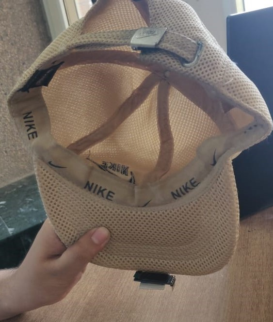

Introducing SCOUBI, a method that unlocks insights from the extrasomatic space of spatial transcriptomics data.
Bhavay Aggarwal
I am a final-year Bioinformatics PhD student at Georgia Institute of Technology, working in the Sinha Lab.
My work focuses on computational methods for spatial transcriptomics and single-cell omics. I build tools to study cellular organization, subcellular transcript localization, and cell-cell communication, with a broader interest in separating biological signal from stochastic variation.
Before Georgia Tech, I completed my Bachelor of Engineering in Computer Science and Biosciences at IIIT Delhi.
Updates
What’s new
Our CellSP paper introduces an interpretable framework for identifying transcript localization patterns in subcellular spatial transcriptomics data.
InSTAnT identifies transcripts that colocalize with one another in individual cells.
Publications
Loading publications…
Projects
Study of inter-regional relations for various disease symptoms generated by Google search trends
Performed spatiotemporal analysis of Google search trends for various disease symptoms to forecast regional COVID-19 cases using machine learning.
Outbreak analysis of Escherichia coli O157
Created a bioinformatics web interface combining genome assembly, functional annotation, and comparative genomics to enable rapid outbreak analysis of E. coli strains.
Conditional VAE based on the RoBERTa encoder architecture to transform recipes across cuisines
Developed an open-source Python library for performing pairwise lipid force distribution analysis in molecular dynamics simulations.
Other Fun Work
Some projects I have fond memories of.

A heads-up navigation cap designed using Raspberry Pi to surface walking directions in the user’s field of view, combining wearable prototyping, route guidance, and interface experimentation.
A ML-based image correction browser extension for color vision deficiency, combining simulation, correction models, and an extension workflow to make on-screen content easier to distinguish.
Bhavay Aggarwal
AI/ML for Spatial & Multimodal Biology
Profile
I am a computational biologist developing robust and interpretable methods for spatial transcriptomics, single-cell omics, and multimodal biological data. My work spans statistical modeling, machine learning, and scientific software development, with experience leading independent projects and collaborating across experimental and computational teams.
Education
Georgia Institute of Technology
2022 — Present
Ph.D. in Bioinformatics · Expected May 2027
M.S. in Bioinformatics, 2023
Indraprastha Institute of Information Technology
2018 — 2022
Bachelor of Engineering in Computer Science and Biosciences
Experience
Georgia Institute of Technology — Sinha Lab
2023 — Present
Graduate Research Assistant · Atlanta, GA
- Developing computational methods for spatial transcriptomics, single-cell omics, and multimodal biological datasets.
- Published 7 papers in journals including Nature Communications, Communications Biology, and Cell Reports.
GlaxoSmithKline
2023
Computational Biology Intern · Collegeville, PA
- Designed statistical approaches to map genetic perturbations to disease signatures (MegaMap project).
- Inferred robust gene-disease relationships and validated them with clinical data.
Indian Institute of Science — ATCG Lab
2021
Research Intern · Remote, India
- Implemented novel distance metrics and engineered distributed genomic distance framework with Ray, improving indexing time by 90%.
Wikilimo
2021
Machine Learning Intern · Remote, India
- Created explainable AI models for wildfire modeling using SMOS-derived products.
Complex Systems Lab, IIITD
2020
Research Intern · Delhi, India
- Applied language models to uncover contextual relationships among ingredients, translating recipe text into features for computational cuisine analysis.
All India Institute of Medical Sciences
2020
Research Intern · Delhi, India
- Created machine learning models to segment brain and neck tumors from X-ray images using super voxels.
Technical Skills
Languages
 Python
Python R
R C/C++
C/C++ SQL
SQLJava
Libraries & frameworks
 Keras
Keras Scikit-learn
Scikit-learn Hugging Face
Hugging FaceScanpy
Seurat
scvi-tools
AnnData
 NumPy
NumPy Pandas
PandasTools & platforms
 Git
Git Linux
LinuxSlurm
Snakemake
 Ray
RayDask
 Conda
CondaAWS
 GCP
GCP